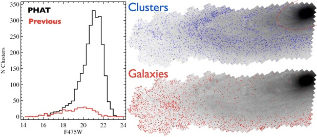
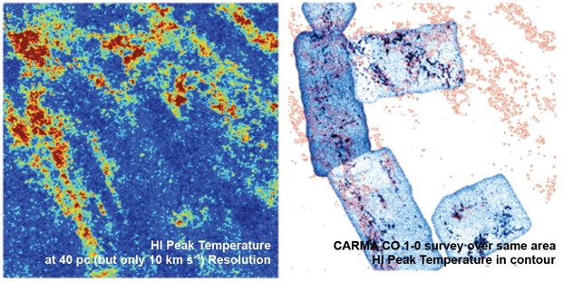
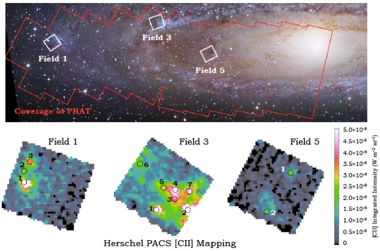

The Panchromatic Hubble Andromeda Treasury, a.k.a. PHAT, is a Hubble Space Telescope Multi-cycle program to map roughly a third of M31’s star forming disk, using 6 filters covering from the ultraviolet through the near infrared. With HST’s resolution and sensitivity, the disk of M31 will be resolved into more than 100 million stars, enabling a wide range of scientific endeavors.
Star formation histories derived on ~50 parsec scales
Improved stellar evolution models, capbrated at UV through NIR wavelengths
Well-defined catalogs of stellar clusters, at all ages
Characterization of variations in the stellar mass function from ~3 to 30 solar masses
Measurements of the mass function and age distributions of stellar clusters
Maps of extinction from dust, and characterization of the extinction law
Capbration of star formation indicators
Age dating of supernova remnants
Quantitative constraints on the couppng between star formation and the interstellar medium
Identification and characterization of variable stars
Kinematic decompositions of structural components
Cross-identification of multi-wavelength sources and emission pne objects
The PHAT survey has observed the northeast quadrant of M31, which shows the least extinction and has the least contamination from M32. The survey covers the bulge, the inner bar, the main star forming ring at 10 kpc, and the more diffuse warped outer arm. Details of the survey design can be found in Dalcanton et al 2012.
PHAT observations are grouped into 23 “bricks”. Each brick consists of a 3x6 array of HST pointings with complete coverage in the UV, optical, and NIR. Each brick is assigned a unique number (B??), and is listed under a distinct proposal ID. Odd numbered bricks extend from the bulge (B01) along the major axis out to the edge of the star forming disk (B23). Even numbers form an adjacent strip that covers the minor axis, the star forming ring, and much of the outer spiral arm.
Each brick is observed as two 3x3 “half bricks”, with observations taken ~6 months apart. In each observing season, a 3x3 half brick of WFC3 pointings is completed in primary, while parallel observations produce a highly overlapping 3x3 tile of ACS observations in the adjacent half brick. After 6 months, the telescope is rotated by 180 degrees from the original orientation, such that the primary WFC3 pointings cover the area that was tiled by ACS in the first season, and vice versa. Each pointing is observed for 2 orbits, using the 2 WFC3 cameras for one orbit each. Pointings are dithered to produce Nyquist sampling in the optical and NIR images, and to fill the chip gap in UVIS.
Within each brick, each of the 18 pointing centers is assigned a field number (F??), starting with “01” in the north east corner, and increasing to “18” in the south west. The field tiling is set by the WFC3/IR footprint, and observations in other cameras are labelled with the field number of the WFC3/IR field they most closely overlap.
PHAT takes images in 6 different filters, 2 per HST camera. The UV is covered by F275W and F336W with WFC3/UVIS, providing excellent leverage on extinction and on stellar temperature for the hottest stars. The optical is covered by F475W and F814 with ACS/WFC, which offers the best depth and temperature separation for typical stars. The NIR is covered by F110W and F160 with WFC3/IR, spanning wavelengths that are least affected by dust, and that are dominated by the coolest stars.
The primary output of PHAT is 6-filter photometry for all stars in the survey footprint. The photometry is generated by forward modeling the position and flux of every detectable star in all overlapping images, after astrometrically aligning the images to better than 10 milliarcseconds. The latest data release (Williams et al 2014) includes photometric measurements for approximately 117 million stars.
The optical and NIR data in PHAT is “crowding limited”, meaning that the limiting brightness of detected stars is set by the magnitude where the local stellar density reaches the maximum number of stars that can be individually resolved in a given camera. As a result, the depth of the photometric catalogs is a strong function of radius within the galaxy, varying by more than 5 magnitudes from the high density bulge to the diffuse outer disk in the redder filters.
Astrometrically aligned photometric catalogs and interactive image explorers are available on the Multimission Archive at Space Telescope (MAST).
In addition to the primary HST imaging survey, PHAT is associated with a number of high value multi-wavelength observing programs.
The PHAT imaging was supplemented by an extensive spectroscopic campaign to derive kinematic properties of M31’s stellar populations. Over 10,000 stars were observed with Keck’s DEIMOS spectrograph, yielding secure radial velocity measurements for close to 8,000 stars. The spectroscopic sample includes RGB stars of varying metallicity, AGB stars, blue and red supergiants, and main sequence stars. Details can be found in Dorman et al 2013.
The optical imaging from PHAT was used for an innovative
“citizen science” campaign to identify stellar clusters.
In partnership with the Zooniverse, users of the
“Andromeda Project”
inspected over 1.8 million images, identifying thousands
of stellar cluster candidates. These classifications
led to a final catalog of over 2700 stellar clusters,
spanning masses from 300 to a million solar masses, and
ages from a few million to ten billion years old.
Details can be found in Johnson et al 2014.

PHAT imaging offers an unprecedented high resolution
(100pc) look at the stellar populations of a massive
spiral. However, stars are only part of the baryonic
census. In an effort to match the resolution of PHAT,
A. Leroy and A. Schruba have lead major programs to map
M31 at extremely high resolution in the HI line (w/ the
VLA) and in CO (w/ CARMA), as well as in the L-band
radio continuum. These surveys are revealing structures
on the scale of individual molecular clouds.

To complement PHAT’s stellar census, K. Sandstrom led a
Herschel PACS + Optical IFU line imaging survey of key
diagnostic lines of the interstellar medium. These
lines provide measures of ISM cooling rates, which can
be compared with the energy input from stellar sources,
as inferred from PHAT.

| Eric Bell | U. of Michigan | Lori Beerman | U. of Washington | Luciana Bianchi | Johns Hopkins |
| Martha Boyer | STScI | Nelson Caldwell | CfA | Julianne Dalcanton | U. of Washington |
| Andy Dolphin | Raytheon | Hui Dong | NOAO | Claire Dorman | UC Santa Cruz |
| Morgan Fouesneau | U. of Washington | Karrie Gilbert | U. of Washington | Leo Girardi | Obs. Padova |
| Stephanie Gogarten | U. of Washington | Karl Gordon | STScI | Dimitrios Gouliermis | MPIA |
| Raja Guhathakurta | UC Santa Cruz | Paul Hodge | U. of Washington | Jon Holtzman | NMSU |
| Kirsten Howley | UCSC/LLNL | Cliff Johnson | U. of Washington | Jason Kalirai | STScI |
| Chris Kochanek | The Ohio State University | Dustin Lang | Princeton | Soeren Larsen | Utrecht |
| Tod Lauer | NOAO | Adam Leroy | NRAO | Alexia Lewis | U. of Washington |
| Jason Melbourne | Caltech | Antonela Monachesi | U. of Michigan | Knut Olsen | NOAO |
| Hans-Walter Rix | MPIA | Keith Rosema | Random Walk Group | Phil Rosenfield | U. of Washington |
| Abi Saha | NOAO | Izaskun San Roman | U. of Florida | Ata Sarajedini | U. of Florida |
| Anil Seth | CfA | Jacob Simones | U. of Minnesota | Evan Skillman | U. of Minnesota |
| Kris Stanek | OSU | Rachel Wagner-Kaiser | U. of Florida | Dan Weisz | U. of Minnesota |
| Ben Williams | U. of Washington |
Department of Astronomy
University of Washington
Physics-Astronomy Bldg.
3910 15th Ave NE
Seattle WA 98195-0002, USA